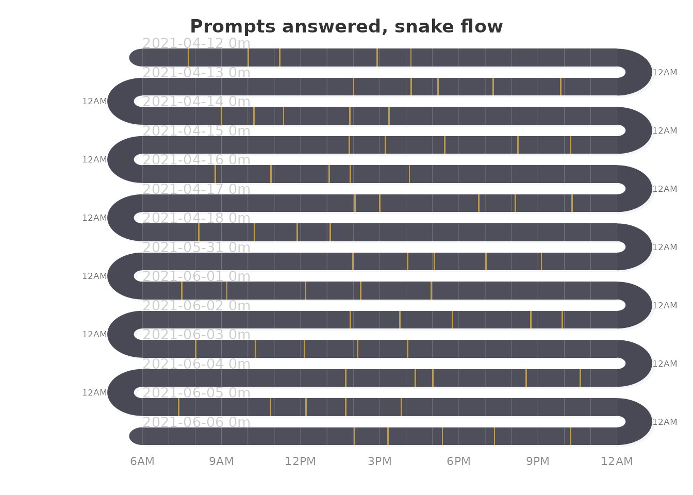
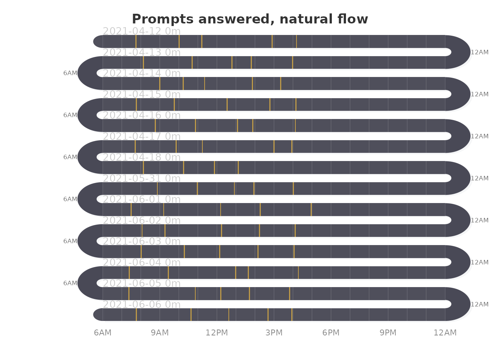
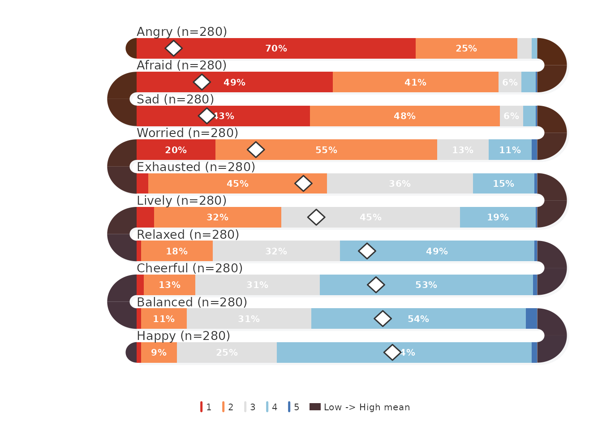
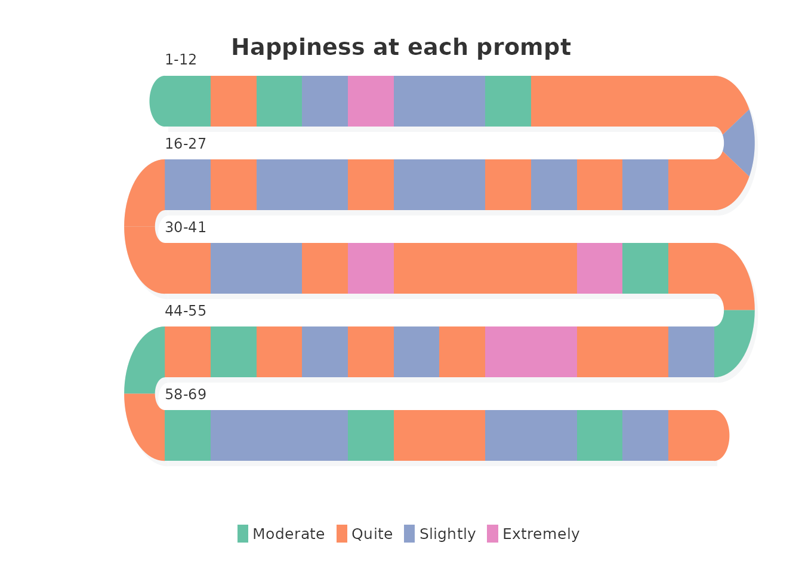
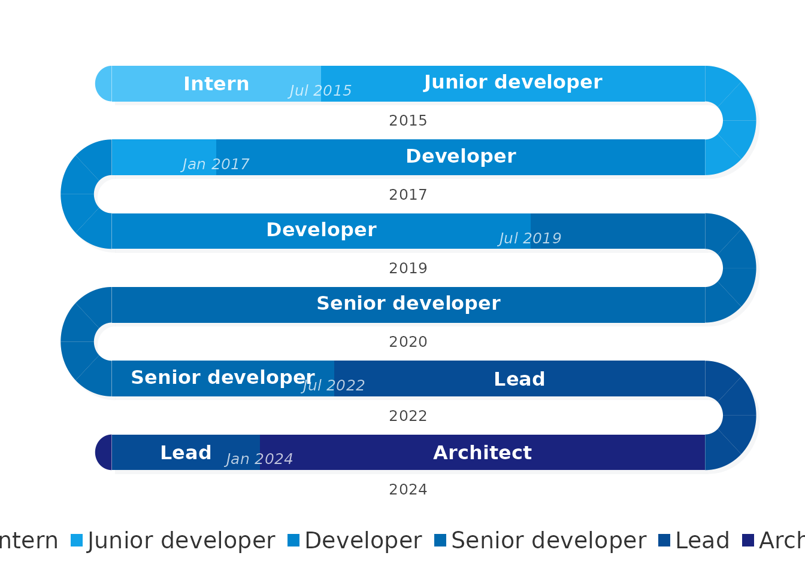

Serpentine plots
Written by Mohammed Saqr and Sonsoles López-Pernas
Source:vignettes/snakeplot.Rmd
snakeplot.RmdMany data in the behavioral and learning sciences are long and ordered: a two-week record of experience sampling prompts, the actions of a learner in one session, the phases of a career, or a questionnaire of thirty items. Drawn on a single axis, such data either outgrow the page or are compressed until individual observations can no longer be distinguished. Cutting the axis into separate panels keeps the resolution but breaks the order at every cut.
A serpentine plot folds the axis instead of cutting it. The ordered
axis is divided into segments that are drawn as horizontal bands, one
below the other, and consecutive bands are joined by a U-turn arc, so
the reader follows one continuous path from the first observation to the
last. The bands share a common scale, which makes the plot a stack of
small multiples at the same time: positions can be compared down the
page as well as along the path. The snakeplot package draws
serpentine plots for survey responses, experience sampling data,
categorical sequences, timelines and time-stamped activity, all with
base R graphics.
Data
The package includes three datasets from a 14-day experience sampling study of university students (Neubauer & Schmiedek, 2024), rescaled from a 1–7 to a 1–5 scale.
-
ema_emotions: 280 students by 10 emotion items; each value is a student’s mean rating over the study, rounded. -
student_survey: the same 280 students by 34 items in four constructs, with the construct as a column prefix (Emo_,Mot_,Reg_,Eng_). -
ema_beeps: 11,474 answered prompts from 321 students, with the student (id), the study day (day), the time of answering (start_time) and two ratings (happy,angry).
The examples below follow one student through the study. Their rows are selected once and reused:
student <- subset(ema_beeps, id == "xcVDLRQOwn")
xtabs(~ day, data = student)
#> day
#> 1 2 3 4 5 6 7 8 9 10 11 12 13 14
#> 5 5 5 5 5 5 4 5 5 5 5 5 5 5This student answered 69 prompts: five on every day except day 7, which has four.
The layout
A serpentine plot is defined by how the ordered axis is cut into
bands and in which direction each band is read. Bands are one unit each:
one item, one day, or one segment of a sequence. With
flow = "snake", the direction alternates from band to band,
as in boustrophedon writing, so the end of each band is next to the
start of the following one. With flow = "natural", every
band reads in the same direction and the U-turn carries the reader back
to the starting side. start_from chooses the side on which
the first band begins.
activity_snake() draws time-stamped events as ticks on a
daily clock, one band per day. In the default snake flow, the clock runs
left to right on odd days and right to left on even days:
activity_snake(student, flow = "snake", title = "Prompts answered, snake flow")
In the natural flow, the same clock time falls at the same horizontal position on every day:
activity_snake(student, flow = "natural",
title = "Prompts answered, natural flow")
The two flows trade continuity against alignment. Snake flow keeps consecutive observations adjacent across a U-turn and suits data read as one continuous sequence. Natural flow aligns a shared axis down the page and suits data in which the position within a band has the same meaning on every band, such as the time of day. The package uses natural flow by default for sequences and timelines and snake flow for the other displays; every function accepts both.
Survey responses
For rating-scale data, each item is a band.
survey_snake() places the responses of an item in zones
whose widths are the shares of the response levels, shades the band by
the item mean, and marks the mean with a diamond. With
tick_shape = "bar" the zones become a stacked bar with
printed percentages.
survey_snake(ema_emotions, tick_shape = "bar", sort_by = "mean",
colors = snake_palette("ocean", n = 5))
The survey vignette covers ticks, dots, response shares, correlation arcs between adjacent items, construct panels and days as bands.
Categorical sequences
A sequence of categorical states, such as the actions of a learner or
the ratings of one person over successive prompts, is drawn by
sequence_snake() as one block per position, colored by
state. The student’s happiness ratings, in the order in which the
prompts were answered, form such a sequence:
sequence_snake(with(student, factor(happy, levels = 1:5,
labels = c("Not at all", "Slightly",
"Moderate", "Quite",
"Extremely"))),
rows = 5, title = "Happiness at each prompt")
The counts behind the blocks:
xtabs(~ happy, data = student)
#> happy
#> 2 3 4 5
#> 22 10 32 5The student never reported the lowest level and reported “Quite” (4) at 32 of the 69 prompts, the most frequent state; “Extremely” occurred five times.
Timelines
A timeline is a small number of long phases with start and end dates.
timeline_snake() expands the phases into monthly blocks,
labels each transition with its date and each band with its year.
career <- data.frame(
role = c("Intern", "Junior developer", "Developer",
"Senior developer", "Lead", "Architect"),
start = c("2015-01", "2015-07", "2017-01", "2019-07", "2022-07",
"2024-01"),
end = c("2015-06", "2016-12", "2019-06", "2022-06", "2023-12",
"2024-12")
)
timeline_snake(career)
The sequences guide treats sequences, timelines and several sequences at once.
Choosing a display
| Data | Function |
|---|---|
| Respondents by rating-scale items |
survey_snake(), survey_sequence(),
sequential_dist()
|
| Prompts with a rating, a day and a time | survey_snake(var =, day =, timestamp =) |
| Time-stamped events | activity_snake() |
| A continuous signal over the day | line_snake() |
| One ordered categorical sequence | sequence_snake() |
| Several sequences | multi_snake() |
| Phases with start and end dates | timeline_snake() |
| Any of these by group |
facet_snake(), or
survey_snake(facet = TRUE)
|
All functions draw with base graphics and return their layout
invisibly; colors come from snake_palette(), described in
the palettes
and layout guide.
References
Neubauer, A. B., & Schmiedek, F. (2024). Approaching academic adjustment on multiple time scales. Zeitschrift für Erziehungswissenschaft, 27(1), 147–168. https://doi.org/10.1007/s11618-023-01182-8